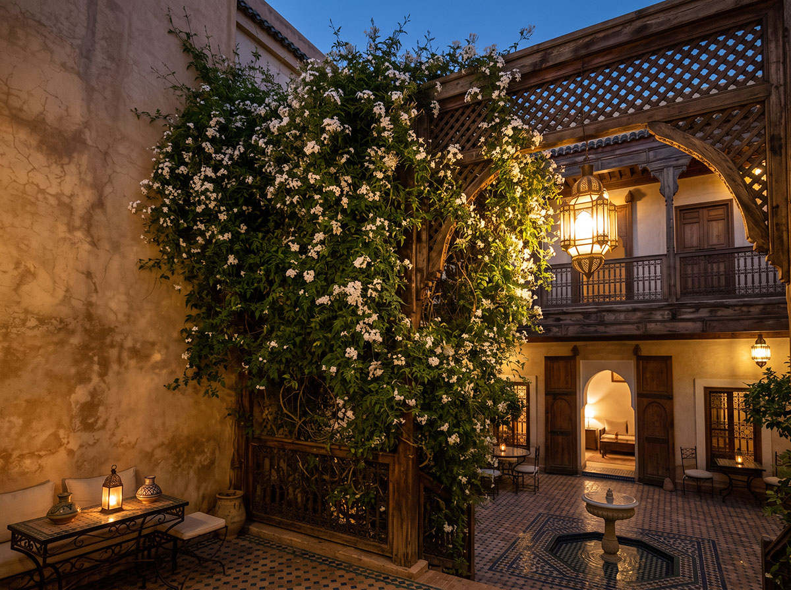

Patio
Cour intérieure, fontaine, reflet du ciel — le cœur silencieux de la maison.

Cour intérieure fermée sur l'extérieur, ouverte au ciel — le patio est le centre silencieux autour duquel toute la maison s'organise. Chambres, ateliers et espaces communs s'ouvrent sur lui, jamais sur la rue.
Ce n'est pas un jardin d'agrément : c'est un dispositif — climatique, social, spirituel. Il tempère l'air, réunit sans exposer, et son ciel ouvert rappelle, à qui lève les yeux, une présence au-dessus de la maison.

Une architecture plus ancienne que l'Islam
La maison organisée autour d'une cour fermée n'est pas une invention arabe : elle remonte au Proche-Orient antique, où elle constitue déjà, des millénaires avant l'Islam, la forme domestique de référence. Rome en hérite à sa manière — la domus romaine, dotée de son atrium, cour à ciel ouvert qui recueille l'eau de pluie sous le regard du ciel : c'est ce même dispositif qui, par transmission directe, deviendra le patio andalou, puis le patio marocain que le Riad perpétue aujourd'hui. Le monde arabo-andalou en compose la synthèse propre au riad : la cour méditerranéenne rejointe au jardin islamique clos.

Une même logique, jusqu'en Sicile
Cette même géométrie — cour fermée, façades aveugles vers l'extérieur, vie tournée vers l'intérieur — réapparaît jusqu'en Sicile dans le baglio, la masseria fortifiée qui organise encore aujourd'hui le paysage rural de l'île. Son nom vient très probablement du normand-français ballium (la basse-cour fortifiée d'un château, attestée dès 1194), même si une hypothèse minoritaire y voit un emprunt à l'arabe bahah (« cour »). Ce que l'on peut affirmer avec certitude, c'est que la logique architecturale du baglio — la même que celle de la cour rustique romaine — rejoint, par des chemins distincts plutôt que par emprunt direct, celle du patio andalou et maghrébin : une cour que l'on ferme au monde pour mieux l'habiter.

Une fontaine, un vers gravé dans la pierre
Nulle part cette rencontre entre eau et pierre n'a été chantée avec plus de précision qu'à l'Alhambra de Grenade, où le poète-vizir Ibn Zamrak fit graver ses propres vers sur le bord de la fontaine du Patio des Lions :
تَشَابَهَ جَارٍ لِلْعُيُونِ بِجَامِدٍ
فَلَمْ نَدْرِ أَيًّا مِنْهُمَا كَانَ جَارِيَا
« Le mouvant et l'immobile se sont confondus aux yeux — nous ne savions plus lequel des deux coulait. »
— Ibn Zamrak, poète-vizir de Grenade (1333–1393)
Ce que le vers décrit — l'eau si calme qu'elle semble pierre, la pierre si polie qu'elle semble couler — est l'expérience même de qui s'assoit face à la fontaine du patio : un instant où le regard ne sait plus distinguer le mouvement du repos.
Le patio et sa fontaine sont déjà chantés dans L'eau — Ibn Khafāja y voit un fleuve qui vaut un royaume.
Ce que le vers d'Ibn Zamrak décrit à l'échelle d'une fontaine, le Riad le vit à l'échelle d'une vie. Le patio devient le cœur battant de la formation : les jeunes hommes qui y grandissent n'y apprennent pas seulement un métier ou un geste, mais à reconnaître, dans l'ordre du lieu, l'ordre du Créateur lui-même — la force tempérée par la mesure, la passion disciplinée par le rythme, le ciel reconnu jusque dans le reflet d'une vasque. Le patio n'est pas une image du cosmos : il en est, à hauteur d'homme, le microcosme habité.